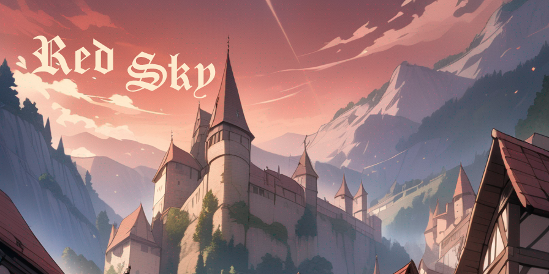

Sam's Archive |
Red SkyLast Update: January 15, 2024  Explore a vast rpg with bullet hell combat mechanics. Collect, upgrade, and fight. Will you be the hero who brings peace to this world?
Stolen StarrrsLast Update: April 28, 2022
Game Link“Stolen StARRRs” is an action-adventure, rogue-like, rpg which offers a smooth gameplay in a fantasy-space theme with various PVE elements. Players will face a deadly spaceship atmosphere and try to survive. Created using Unity, Aseprite, and Tiled.Shape BusterLast Update: 2021 Try to draw the best circle! Created using Unity and Adobe XD.Sam's Aerial FishingLast Update: October 1, 2021 Script for Dreambot. Gains hunter and fishing xp with the "aerial fishing" method. Created using Java and Photoshop.Sam's Cannonball MasterLast Update: August 30, 2021 Script for Dreambot. Gains smithing xp with cannonballs. Created using Java and Photoshop. |